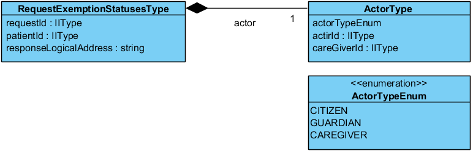
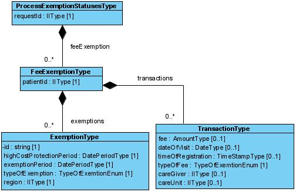

financial: patientfees: exemption
1.0.0 - release
financial: patientfees: exemption - Local Development build (v1.0.0) built by the FHIR (HL7® FHIR® Standard) Build Tools. See the Directory of published versions
Källa: Högkostnadsskydd, tjänstekontraktbeskrivning version 1.0 (2024-03-25), TKB_financial_patientfees_exemption.docx.
Här beskrivs de meddelandemodeller som tjänstekontrakten bygger på. För varje meddelandemodell beskrivs hur mappning ser ut delvis mot Nationell Informationsstruktur 2016:1 samt mot schema (XSD) för tjänstekontrakt.
Begäran om utlämnande – tjänstekontraktet RequestExemptionStatuses

Utlämnande – tjänstekontraktet ProcessExemptionStatuses

Datum anges alltid på formatet ”ÅÅÅÅMMDD”, vilket motsvarar ISO 8601-kompatibla formatbeskrivningen ”YYYYMMDD” .
Tidpunkter anges alltid på formatet ”ÅÅÅÅMMDDttmmss”, vilket motsvarar den ISO 8601-kompatibla formatbeskrivningen ”YYYYMMDDhhmmss”.
Tidszon anges inte i meddelandeformaten. All information om datum och tidpunkter som utbyts via tjänsterna ska ange datum och tidpunkter i den tidszon som gäller/gällde i Sverige vid den tidpunkt som respektive datum- eller tidpunktsfält bär information om. Såväl tjänstekonsumenter som tjänsteproducenter skall med andra ord förutsätta att datum och tidpunkter som utbyts är i tidszonerna CET (svensk normaltid) respektive CEST (svensk normaltid med justering för sommartid).
Personnummer anges enligt format ÅÅÅÅMMDDNNNN.
Samordningsnummer anges enligt format ÅÅÅÅMMDDNNNN.
De inledande sex siffrorna utgår från personens födelsetid (år, månad och dag). Därefter följer ett tresiffrigt individnummer som motsvarar födelsenumret i ett personnummer. Individnumret hämtas slumpvis ur en serie 001-999 för alla som är födda samma dag. Numret är udda för män och jämnt för kvinnor. Siffran för födelsedag ökas med talet 60 och en kontrollsiffra beräknas på samma sätt som för ett personnummer.
Exempel
Samordningsnummer för en man som är född den 3 oktober 1970 och har individnummer 239 blir
19701003
+60
—————
197010632391
Format för nationellt reservidentitet: XXYYMMDDNNGC.
För mer information se informationsspecifikationen i domänen strategicresourcemanagement.persons.person [R3].
Samtliga belopp anges som heltal eller med max 2 decimaler, exempelvis: 1123.40